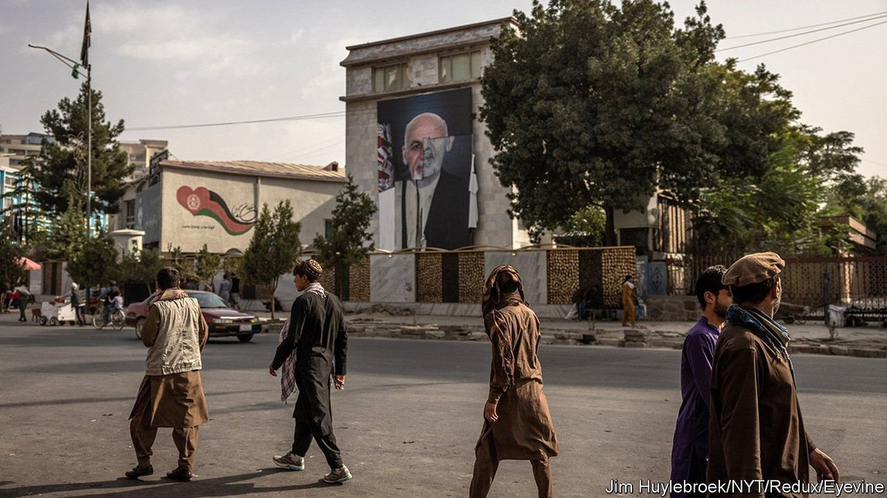

2021-09-06T09:19:06+00:00
国家贴金
阿富汗政府因自身腐败而垮台
和越南一样，美国扶持的这个政府被腐败蛀空

看起来这就像1975年西贡陷落的重演：美国支持的军队节节败退，敌军士兵大步进驻总统府，绝望的人们将机场团团围住。不过阿富汗和南越不仅仅是表面看起来相似。这两个为取悦美国赞助者而建立的政权都被国家治理中的痼疾之一——腐败——给掏空了。
在阿富汗，“从领出生证到领死亡证，一辈子里总有各种事情要你行贿”，前外交官阿哈默德·沙阿·卡塔瓦扎依（Ahmad Shah Katawazai）说道。官员和警察例行公事地索要“baksheesh”（即小费）。随着塔利班的推进，拿到一本护照要给的贿金涨到了数千美元。
更糟糕的是，政府的职位本身就是一种很值钱的商品。腐败问题专家莎拉·查耶斯（Sarah Chayes）在阿富汗运营一家非政府组织时发现，官员们的职位常常是花钱买来的，所以得捞回扣把投资收回来。卡塔瓦扎依说，想当某个地区警察局的局长可能要花10万美元。官员们的主要目标变成了敲诈勒索，再把所得收入分给家人，还有回馈资助过他们的关系网。
早在2001年之前，阿富汗在一定程度上就是由这样的关系网管理。但据阿富汗重建特别督察长（Special Inspector General for Afghanistan Reconstruction，SIGAR）所说，美国向军阀行贿更助长了这些网络的势力。2009年，由北约领导的驻阿富汗国际安全援助部队（ISAF）建立了一个名为Shafafiyat（普什图语里指“透明”）的反腐败机构，但收效甚微。政府的反腐败检察官主要是在追查政敌。到最后，这个国家已经腐败到省长和圣战分子做交易的地步。士兵数量虚增，因为指挥官们为了吃空饷在名单上列出了并不存在的“幽灵兵”。
美国人可能还记得越南战争中的“幽灵兵”一词，当时腐败的高级军官也用了同样的套路。一名南越上校曾下令进行无目的炮击，这样就能把用过的弹壳当作废金属兜售。在阿富汗也一样，警察和士兵从海洛因买卖中获利。1978年，安全智库兰德（RAND）发布了一份关于南越沦陷的报告，称南越人自己认为腐败是“最终陷落的主要原因”。
那么，在几十年后进驻阿富汗时，美国为什么没有严肃对待腐败问题呢？一个答案是，政治思想家只是现在才开始重视这个问题。政治学家弗朗西斯·福山（Francis Fukuyama）等学者认为，腐败是往前现代政府的倒退，其中权力基于个人关系而非制度。因此南越和阿富汗就像黑手党或中世纪欧洲的封建国家。这样的国家缺乏必要的凝聚力来打击有组织有纪律的叛乱分子，如越南共产党或塔利班。
监督机构“遏制腐败”（CurbingCorruption）的马克·皮曼（Mark Pyman）认为，另一个问题是，对于那些只关注九个月轮岗期内作为的军官来说，腐败问题太过棘手。至于援助机构，它们判断成功与否的标准通常是看花了多少钱。在南越和阿富汗，大量美元的流入都导致通胀飙升，令公共部门的工资大幅贬值。（阿富汗在2020年的GDP约为200亿美元，在2001年至2021年间接受了美国1450亿美元的援助。它2003年至2008年的平均通胀率为17.5%）。公务员不得不索要回扣来养活自己。
因此，反腐败专家建议，援助应该俭省，重点关注成果。这说起来容易做起来难。如果美国意识不到只靠美元无法建立一个真正的政府，它最终就会造出更多虚有其表的政府。
2021-09-06T09:19:06+00:00
Nation-gilding
The Afghan government was undone by its own corruption
As with Vietnam, an American client state was crippled by graft
IT LOOKED LIKE the fall of Saigon in 1975 on fast-forward: an American-backed army melting away, enemy fighters strolling into the presidential palace, desperate crowds mobbing the airport. But the similarities between Afghanistan and South Vietnam were not only superficial. Both states, built to please their American sponsors, had been hollowed out by one of the oldest diseases of governance: corruption.
In Afghanistan, “from your birth certificate to your death certificate and whatever comes in between, somehow you have to bribe,” says Ahmad Shah Katawazai, a former Afghan diplomat. Officials and police routinely demand baksheesh (a “tip”). As the Taliban advanced, the pay-off required for a passport rose to thousands of dollars.
Worse, a government job is itself a valuable commodity. As Sarah Chayes, an expert on corruption, discovered while running an NGO in Afghanistan, officials often buy their posts and must extort kickbacks to recoup their investment. Mr Katawazai says it can cost $100,000 to become a district police chief. Officials’ main goal becomes extorting revenue to distribute to their families and patronage networks.
Afghanistan was partly run by such networks, even before 2001. But America strengthened them by paying off warlords, according to the Special Inspector General for Afghanistan Reconstruction (SIGAR). In 2009 ISAF, the coalition of NATO-led forces in the country, set up an anti-corruption unit called Shafafiyat (“transparency” in Pashto), with modest results. The government’s anti-corruption prosecutor mainly pursued political enemies. By the end the country was so corrupt that governors cut deals with jihadists. The army’s numbers were inflated by “ghost soldiers”, absentees listed on the payroll so that commanders could pocket their salaries.
Americans may remember the term “ghost soldiers” from the war in Vietnam, where corrupt senior officers used the same system. One South Vietnamese colonel used to order aimless artillery barrages in order to hawk the spent shell casings as scrap metal. As in Afghanistan, police and soldiers profited from the heroin trade. A report in 1978 on the fall of South Vietnam by RAND, a security think-tank, said South Vietnamese themselves believed that corruption was “largely responsible for the ultimate collapse”.
Why then, when it invaded Afghanistan decades later, did America fail to take corruption seriously? One answer is that political thinkers are only now doing so. Scholars such as Francis Fukuyama, a political scientist, see corruption as a throwback to pre-modern governments where power is based on personal ties rather than institutions. In this way South Vietnam and Afghanistan resemble mafias or the feudal states of medieval Europe. States like these lack the cohesion needed to beat a disciplined insurgency such as the Vietnamese communists or the Taliban.
Another problem, says Mark Pyman of CurbingCorruption, a watchdog, is that corruption is too knotty a problem for military officers focused on their nine-month rotations. For their part, aid agencies too often judge success by how much money they disburse. In both South Vietnam and Afghanistan a vast influx of American dollars caused a surge in inflation, wiping out public-sector salaries. (Afghanistan, with a GDP of about $20bn per year in 2020, received $145bn in American aid in 2001-21. Inflation averaged 17.5% in 2003-8.) Public servants had to demand kickbacks to support themselves.
Hence anti-corruption experts recommend that aid should be frugal and focused on achievements. That is easier said than done. If America does not learn that dollars cannot build a real government, it will end up creating more fake ones. ■
2021-09-06T09:19:06+00:00
國家貼金
阿富汗政府因自身腐敗而垮台
和越南一樣，美國扶持的這個政府被腐敗蛀空
看起來這就像1975年西貢陷落的重演：美國支持的軍隊節節敗退，敵軍士兵大步進駐總統府，絕望的人們將機場團團圍住。不過阿富汗和南越不僅僅是表面看起來相似。這兩個為取悅美國贊助者而建立的政權都被國家治理中的痼疾之一——腐敗——給掏空了。
在阿富汗，“從領出生證到領死亡證，一輩子里總有各種事情要你行賄”，前外交官阿哈默德·沙阿·卡塔瓦扎依（Ahmad Shah Katawazai）說道。官員和警察例行公事地索要“baksheesh”（即小費）。隨着塔利班的推進，拿到一本護照要給的賄金漲到了數千美元。
更糟糕的是，政府的職位本身就是一種很值錢的商品。腐敗問題專家莎拉·查耶斯（Sarah Chayes）在阿富汗運營一家非政府組織時發現，官員們的職位常常是花錢買來的，所以得撈回扣把投資收回來。卡塔瓦扎依說，想當某個地區警察局的局長可能要花10萬美元。官員們的主要目標變成了敲詐勒索，再把所得收入分給家人，還有回饋資助過他們的關係網。
早在2001年之前，阿富汗在一定程度上就是由這樣的關係網管理。但據阿富汗重建特別督察長（Special Inspector General for Afghanistan Reconstruction，SIGAR）所說，美國向軍閥行賄更助長了這些網絡的勢力。2009年，由北約領導的駐阿富汗國際安全援助部隊（ISAF）建立了一個名為Shafafiyat（普什圖語里指“透明”）的反腐敗機構，但收效甚微。政府的反腐敗檢察官主要是在追查政敵。到最後，這個國家已經腐敗到省長和聖戰分子做交易的地步。士兵數量虛增，因為指揮官們為了吃空餉在名單上列出了並不存在的“幽靈兵”。
美國人可能還記得越南戰爭中的“幽靈兵”一詞，當時腐敗的高級軍官也用了同樣的套路。一名南越上校曾下令進行無目的炮擊，這樣就能把用過的彈殼當作廢金屬兜售。在阿富汗也一樣，警察和士兵從海洛因買賣中獲利。1978年，安全智庫蘭德（RAND）發布了一份關於南越淪陷的報告，稱南越人自己認為腐敗是“最終陷落的主要原因”。
那麼，在幾十年後進駐阿富汗時，美國為什麼沒有嚴肅對待腐敗問題呢？一個答案是，政治思想家只是現在才開始重視這個問題。政治學家弗朗西斯·福山（Francis Fukuyama）等學者認為，腐敗是往前現代政府的倒退，其中權力基於個人關係而非制度。因此南越和阿富汗就像黑手黨或中世紀歐洲的封建國家。這樣的國家缺乏必要的凝聚力來打擊有組織有紀律的叛亂分子，如越南共產黨或塔利班。
監督機構“遏制腐敗”（CurbingCorruption）的馬克·皮曼（Mark Pyman）認為，另一個問題是，對於那些只關注九個月輪崗期內作為的軍官來說，腐敗問題太過棘手。至於援助機構，它們判斷成功與否的標準通常是看花了多少錢。在南越和阿富汗，大量美元的流入都導致通脹飆升，令公共部門的工資大幅貶值。（阿富汗在2020年的GDP約為200億美元，在2001年至2021年間接受了美國1450億美元的援助。它2003年至2008年的平均通脹率為17.5%）。公務員不得不索要回扣來養活自己。
因此，反腐敗專家建議，援助應該儉省，重點關注成果。這說起來容易做起來難。如果美國意識不到只靠美元無法建立一個真正的政府，它最終就會造出更多虛有其表的政府。